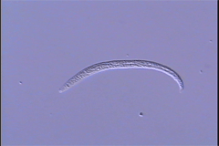
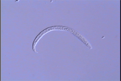
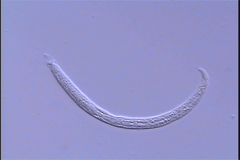
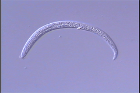
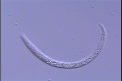
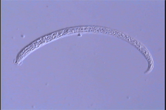
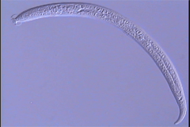

 
Two examples of first stage juvenile

Molting juvenile from first to second stage

Second stage juvenile

Molting juvenile from second to third stage

Third stage juvenile
Molting juvenile from third to adult stage (under construction)

Adult female